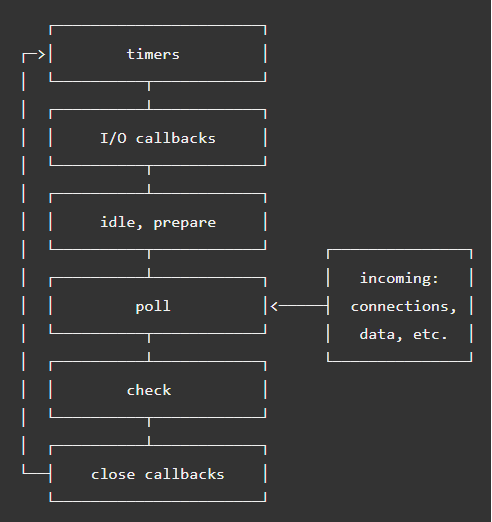

Node.js Introduction
- Question 1:
Write the necessary Node script to make this code work for all arrays. Test your code in Node.JS CLI[1,2,3,4,5,6,7,8].even(); //[2,4,6,8] [1,2,3,4,5,6,7,8].odd(); //[1,3,5,7]
Solution
array_classes.js file content
Array.prototype.even = function(){ return this.filter(i=>i%2==0); }; Array.prototype.odd = function(){ return this.filter(i=>i%2==1); };In node CLI
> require('./array_classes'); {} > [1,2,3,4,5,6,7,8].even(); [ 2, 4, 6, 8 ] > [1,2,3,4,5,6,7,8].odd(); [ 1, 3, 5, 7 ] - Question 2:
- Explain why do we want sometimes to use setImmediate instead of using setTimeout?
Because setImmediate and setTimeout functions execute in different eventloop phases they can be used to accomodate programming requirement. For Example: Suppose there is a funciton we need to run immediately after I/O callback function we might want to use setImmediate rather than setTimeout. If setTimeout were to be used it will wait for next iteration of eventloop which might cause unwanted behavoiur to happen if there were other function in close callback eventloop phase.
 - Explain the difference between process.nextTick and setImmediate?
process.nextTick is not part of the event loop, it adds the callback into the nextTick queue. Node processes all the callbacks in the nextTick queue after the current operation completes and before the event loop continues.
On the other hand, setimmediate schedules a callback to run at check phase of the event loop after IO events' callbacks. - Does Node.js has window object?
Node.js does not have window object because js run on the server side. Instead there are global modules and methods that are automatically created for us.
- Explain why do we want sometimes to use setImmediate instead of using setTimeout?